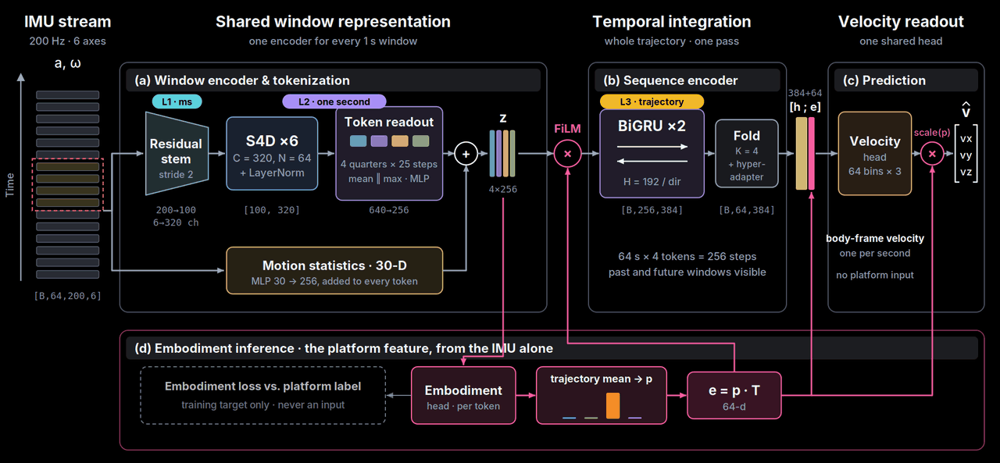
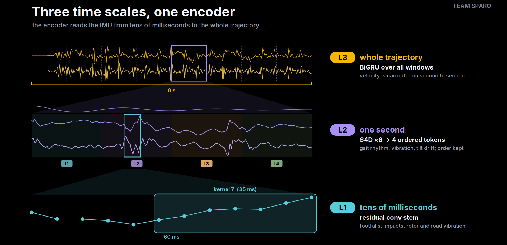
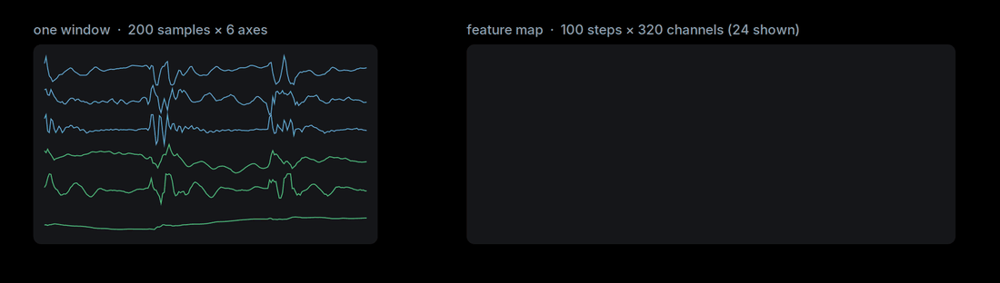
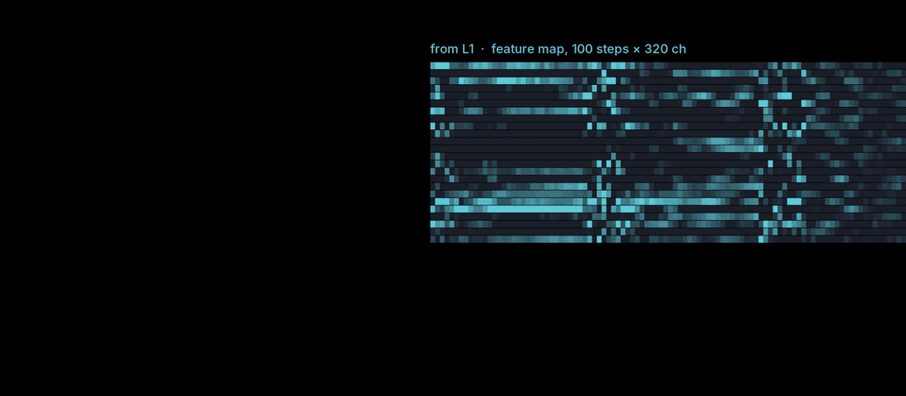
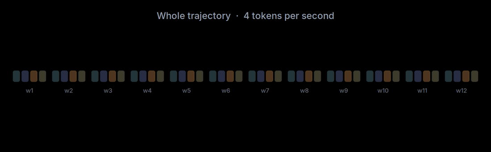
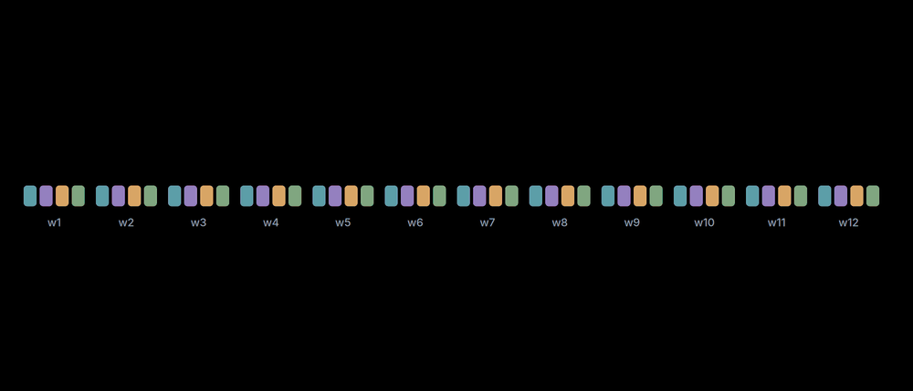
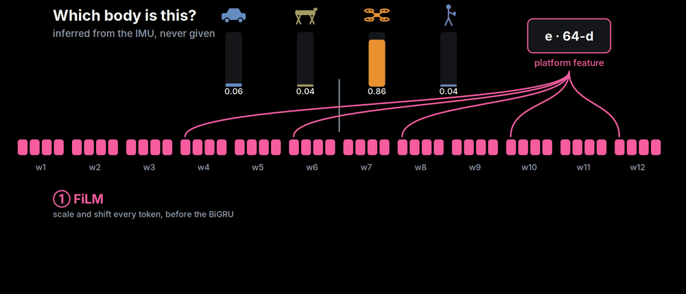
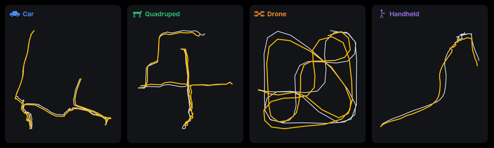
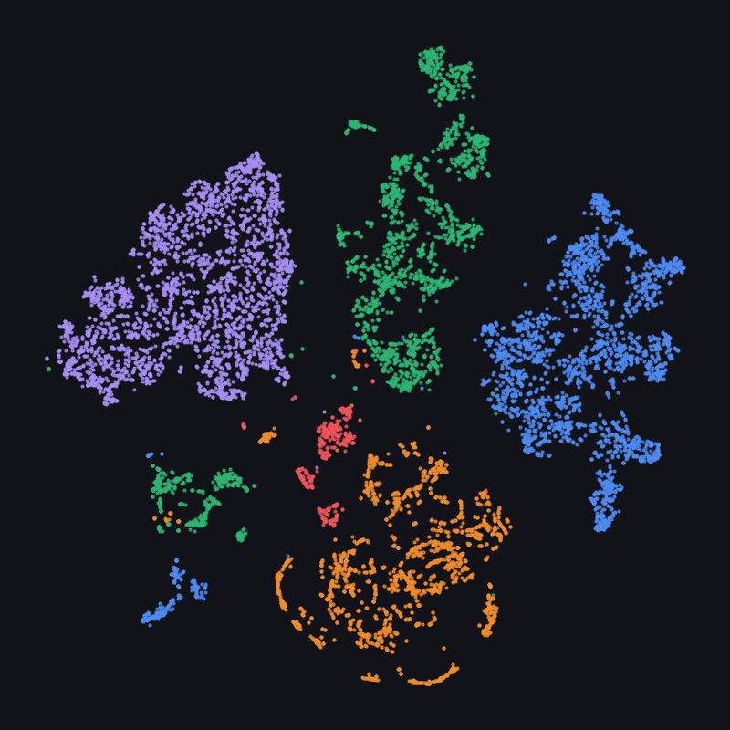
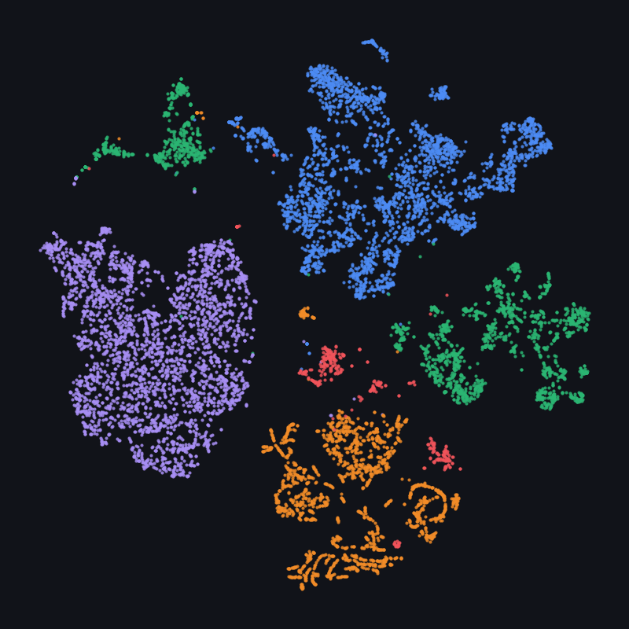

One IMU network. Any robot.
Inertial measurement units (IMUs) are mounted on almost every robot, which makes them a natural basis for one inertial model shared across platforms. However, the same IMU signal describes different motion on a car, a quadruped, a drone and a handheld device, and the platform is not given at test time. We propose a single network with one velocity head for all four platforms, built on two principles. Multi-Scale: the encoder reads the IMU from tens of milliseconds to the whole trajectory, using a residual stem, S4D state-space layers and a bidirectional GRU. Embodiment: a head infers the platform from the IMU alone, and its posterior conditions the encoder, the head and the output scale.
We further adapt the network to unseen recording sessions by self-distillation on the unlabelled test inputs, towards a teacher refined by strapdown IMU integration. Our experiments showed that embodiment conditioning is necessary, since a model trained without one platform failed on it with 3.8–27× its in-distribution error. Our submission achieved a TartanIMU Score of 0.18405 over the 89 test sequences (ATE20 0.498 m, AVE 0.147 m/s, RTE 0.680 m) and 0.23110 on the public leaderboard.
The whole pipeline

Three time scales, one encoder
An IMU window mixes events whose durations differ by two orders of magnitude. The encoder reads them at three time scales, each with the operator that suits it, and each level takes the output of the one before.

Tens of milliseconds
Footfalls, impacts, and rotor or road vibration last tens of milliseconds. A stride-2 convolution with two residual blocks maps the 200×6 window to 100 steps of 320 channels.

One second
Six S4D layers take the L1 features; each channel learns one damped-oscillation kernel that spans the whole second. The output is split into four quarters and pooled into four tokens, so the order of events inside the second is kept. A motion-statistics summary is added to every token.

Whole trajectory
An IMU does not measure velocity, so its level has to be carried across windows. The tokens of all windows are laid out in time order, and a two-layer bidirectional GRU runs over the whole trajectory in one pass.

The platform is inferred, never given
The same IMU pattern means different motion on a car and on a quadruped. An embodiment head scores every token over the four platforms, and its trajectory-mean posterior gives a 64-dimensional platform feature e. The feature is used twice.
Scale and shift every token
Before the BiGRU, the platform feature modulates every token, so one shared recurrence can integrate each embodiment differently.

Beside every window feature
After the BiGRU, the platform feature sits beside every window feature, [hk ; e], so a single velocity head serves every platform.

Official evaluation
Per platform
| Platform | ATE20 (m) | AVE (m/s) |
|---|---|---|
| Car | 0.341 | 0.067 |
| Quadruped | 0.346 | 0.078 |
| Drone | 0.759 | 0.377 |
| Handheld | 0.545 | 0.067 |
| Average | 0.498 | 0.147 |
Drones fly an order of magnitude faster than the other platforms, which is where most of the error sits; normalised by speed, the four platforms are within a few points of one another.
Leave one platform out
| Held out | AVE | vs. seen |
|---|---|---|
| Quadruped | 0.328 | 3.8× |
| Car | 0.515 | 5.4× |
| Drone | 1.469 | 5.2× |
| Handheld | 2.307 | 27× |
Trained on three platforms and tested on the fourth, every held-out platform collapsed. A shared model works because it has seen every embodiment, which is why the network has to know the embodiment.
Velocity in, trajectory out

The encoder separates the platforms
t-SNE of window-encoder features. On the test set, the platform inferred without any label matches the official per-platform counts exactly: 18 car, 16 quadruped, 45 drone and 10 handheld trajectories. The drones whose IMU reports in the world frame and in the body frame form separate clusters.

